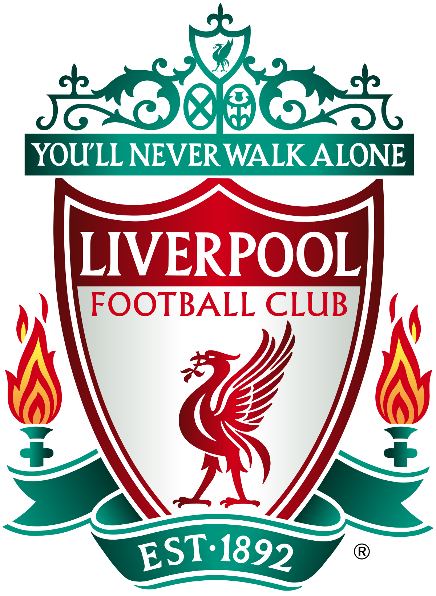

Les Grands Clubs et Compétitions
Le football professionnel se caractérise par des équipes et des compétitions prestigieuses. Voici quelques-uns des clubs les plus renommés :
FC Barcelona
Club légendaire de la Liga, le Barça est l'une des équipes les plus titrées au monde.
Légendes du FC Barcelone
- Lionel Messi - Son génie footballistique et sa capacité à marquer des buts décisifs ont été essentiels dans les victoires en Ligue des champions de 2006, 2009, 2011, et 2015.
- Xavi Hernandez - Milieu de terrain maître de la passe décisive, il a guidé l'équipe vers plusieurs titres européens, notamment en 2009 et 2011.
- Andrés Iniesta - Son but légendaire en finale de la Ligue des champions 2009 et son influence dans le jeu de possession ont contribué grandement aux succès européens du Barça.
Manchester United
Manchester United est l'un des clubs les plus célèbres d'Angleterre, avec une riche histoire.
Légendes de Manchester United
- Sir Bobby Charlton - Pilier de l'équipe lors de la victoire en 1968, il a été un élément clé du succès de Manchester United dans la Ligue des champions.
- Eric Cantona - Bien qu'il n'ait pas remporté de Ligue des champions avec Manchester United, son influence et sa personnalité ont été déterminantes pour faire de l'équipe une légende.
- Cristiano Ronaldo - Son incroyable performance en 2008 a permis à United de remporter la Ligue des champions, avec lui comme buteur essentiel et leader sur le terrain.
Bayern Munich
Le Bayern Munich est l'une des forces dominantes du football européen et mondial.
Légendes du Bayern Munich
- Franz Beckenbauer - Le "Kaiser" a été une légende défensive et a marqué l'histoire du club en remportant la Ligue des champions en 1974, 1975 et 1976.
- Oliver Kahn - Gardien légendaire, il a été le dernier rempart lors de la victoire en 2001, arrêtant un penalty décisif en finale contre Valence.
- Arjen Robben - Son but décisif lors de la finale 2013 contre le Borussia Dortmund a permis au Bayern de décrocher une nouvelle Ligue des champions après une longue attente.
Real Madrid
Le Real Madrid est le club le plus titré en Ligue des champions avec 14 titres à son actif.
Légendes du Real Madrid
- Cristiano Ronaldo - Avec 4 Ligues des champions remportées avec le Real Madrid, il a été l'un des plus grands buteurs de la compétition.
- Zinedine Zidane - En tant que joueur et entraîneur, il a guidé le club vers de multiples titres en Ligue des champions, dont la fameuse victoire en 2002 avec son but légendaire en finale.
- Raúl González - Ancien capitaine et meilleur buteur historique du club, Raúl a joué un rôle clé dans les victoires en 1998 et 2000.
AC Milan
Le Milan AC est un autre club avec une grande tradition en Ligue des champions, avec 7 titres à son palmarès.
Légendes de l'AC Milan
- Paolo Maldini - Défenseur légendaire, Maldini a remporté 5 Ligues des champions, et son leadership a été crucial dans le succès du Milan en Europe.
- Franco Baresi - L'un des meilleurs défenseurs de l'histoire, il a été un pilier dans la défense du Milan lors des victoires en 1989, 1990, 1994 et 2003.
- Kaka - Son talent offensif et ses performances exceptionnelles ont conduit Milan à la victoire en 2007, où il a été le meilleur buteur et a dominé la compétition.
Liverpool FC
Liverpool est l'un des clubs les plus célèbres d'Angleterre, avec 6 titres de Ligue des champions à son actif.
Légendes de Liverpool
- Steven Gerrard - Milieu de terrain emblématique, Gerrard a été le cœur de l'équipe dans la Ligue des champions 2005, marquant un but décisif en finale contre l'AC Milan.
- Kenny Dalglish - Ancien joueur et entraîneur, Dalglish a dirigé Liverpool vers plusieurs titres européens, dont la victoire en 1981 et 1984.
- Mohamed Salah - Son influence et ses buts ont conduit Liverpool à sa 6ème Ligue des champions en 2019, avec des performances remarquables tout au long de la campagne.
Juventus FC
Bien que la Juventus n'ait remporté la Ligue des champions qu'à 2 reprises, elle est l'un des clubs les plus importants d'Europe.
Légendes de la Juventus
- Michel Platini - Avec trois Ballons d'Or et une victoire en Ligue des champions en 1985, Platini a été le créateur du jeu pour la Juventus.
- Alessandro Del Piero - Capitaine emblématique, Del Piero a marqué l'histoire du club, en étant un élément clé de la victoire de la Ligue des champions en 1996.
- Gianluigi Buffon - L'un des meilleurs gardiens de l'histoire, Buffon a joué un rôle crucial dans les campagnes européennes, notamment en 2003 et 2015.
Paris Saint-Germain (PSG)
Le PSG est un club en forte croissance avec une ambition toujours plus grande en Ligue des champions.
Légendes du PSG
- Zlatan Ibrahimović - Avec son charisme et ses buts décisifs, il a mené le PSG vers des titres nationaux, mais sa quête de la Ligue des champions s'est terminée sans succès.
- Thiago Silva - Défenseur central et capitaine du PSG, il a joué un rôle central dans les performances défensives du club lors de leur parcours en Ligue des champions.
- Neymar Jr. - Sa capacité à changer le cours d'un match et à marquer des buts cruciaux a aidé le PSG à atteindre la finale de la Ligue des champions en 2020.
Les Compétitions Internationales
- UEFA Champions League - La plus prestigieuse compétition de clubs en Europe.
- Coupe du Monde de la FIFA - Le tournoi mondial qui réunit les meilleures équipes nationales.
- Copa América - La plus grande compétition de football en Amérique du Sud.